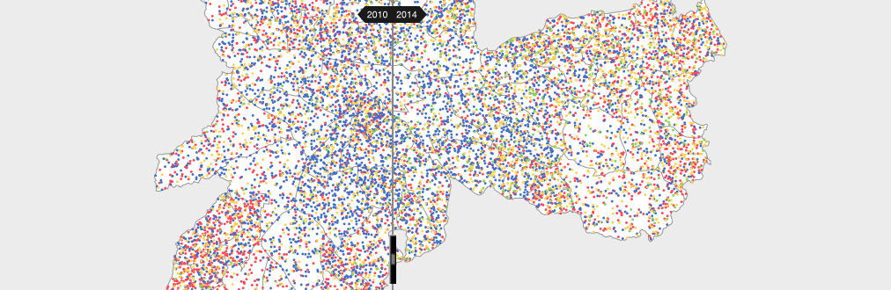
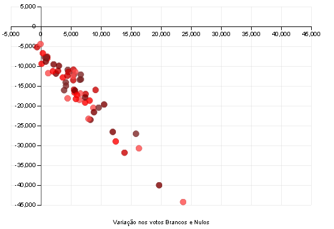

Eleições / Arquivo
Distribuição dos votos para presidente em São Paulo – 2010/2014 (R + Mapbox + Dimple.js)
Uma comparação da distribuição dos votos para presidente na capital paulista nos primeiros turnos de 2010 e 2014.
Publicação original
O período eleitoral é sempre um momento frutífero para coleta de dados e visualizações interessantes. Primeiro, porque o assunto desperta curiosidade de quase todo mundo e pelo fato que os determinantes dos fenômenos eleitorais são extremamente complexos. Segundo, pelo fato do TSE disponibilizar os dados de uma maneira bem estruturada e de fácil acesso; o Repositório de Dados Eleitorais reúne as principais estatísticas das últimas eleições tão organizada que é possível automatizar toda a coleta de dados (fiz a automatização no R, mas vou deixar o código para um post mais adiante).
Oportunamente, a disponibilidade dos dados eleitorais coincidiu com um projeto pessoal de produzir um mapa semelhante a esse: Poverty and Race in America, Then and Now. Trata-se de um Dot Density Map que retrata a distribuição espacial de pessoas que vivem abaixo da linha da pobreza e a raça declarada. A parte interessante do mapa é que ele permite comparar épocas distintas arrastando a barra que divide o mapa entre dois momentos.
É uma maneira bastante elegante de disponibilizar informações georreferenciadas e temporais, mas que não necessariamente traz grandes insights sobre os dados visualizados. Feita essa ressalva, utilizei os dados eleitorais e a solução estética para retratar a distribuição de votos no primeiro turno das eleições presidenciais de 2010 e 2014 no município de São Paulo (clique na imagem para acessar o mapa completo):


A página do mapa possui 6 links com comparações da distribuição dos votos nas eleições de 2010 e 2014: i) Desempenho do PT x PSDB x Marina; ii) Desempenho do PT; iii) Desempenho do PSDB; iv) Desempenho de Marina; v) Distribuição dos votos Nulos e Brancos; vi) Números das Abstenções (fica a ressalva, como discutido anteriormente, sobre o fato da distribuição geográfica dos votos estar associada às zonas eleitorais e não aos domicílios dos eleitores). Arrastando a barra de um lado para o outro é possível visualizar a mudança entre os períodos e procurar avaliar se a dispersão dos votos mudou entre um período e outro.
Do que observei, é difícil enxergar alguma tendência clara nos mapas com exceção da queda expressiva dos votos no PT, que encontra correspondência não em outros partidos mas sim no aumento de votos brancos e nulos. Corroborando essa percepção, o gráfico de dispersão abaixo compara a variação de votos nesse partido e os votos inválidos por zona eleitoral entre as eleições (clique na imagem para visualizar a comparação com os votos no PSDB) e explicita um ponto adicional, não necessariamente visível no mapa: a perda do partido ocorre em todas as zonas eleitorais, o aumento dos votos brancos nulos ocorre em quase todas as zonas, exceto em duas, e a correlação entre ambas é próxima de -1.


Enfim, longe de ser uma análise robusta ou completa (com a grande ressalva que correlação não é causa – ainda correlação visual) sobre determinantes eleitorais em São Paulo, essas visualizações trazem à tona perguntas sobre os processos eleitorais recentes: será que cidade está geograficamente dividida (minha percepção é que não tanto quanto amplamente anunciado, conforme discutido aqui)? Será que o desempenho ruim do PT no primeiro turno de 2014 se explica pelo crescimento de outros candidatos (PSDB ou Marina) ou pelo comportamento dos votos nulos e brancos? As variações nos resultados eleitorais seguem algum padrão geográfico que permitiria associá-las a outras covariadas cuja distribuição geográfica também possui determinantes específicos?
Vou descrever em linhas gerais a estratégia para que caso alguém tenha alguma dúvida ou queira alguma informação fique mais fácil identificar algum ponto específico do trabalho:
- Coleta dos dados do Repositório de Dados Eleitorais (a coleta foi feita no R) e merge dos dados de 2010 com os de 2014;
- Download do mapa das zonas eleitorais de São Paulo (também no R). Utilizei o KML disponível aqui pelo Estadão Dados e realizei o merge dos dados eleitorais com o Shapefile das Zonas Eleitorais;
- Criação dos Shapefiles com os pontos representando os eleitores, edição dos mapas no Mapbox (utilizei o software livre deles, TileMill);
- Utilização de um plugin de JavaScript para criar a visualização do “Antes/Depois”;
- Utilização da biblioteca Dimple.js para criar o ScatterPlot.
A construção dos mapas acima exigiu um esforço considerável (ainda mais considerando a ausência de conhecimento de Javascript e que armazenar páginas no Google Drive exige uma grande dose de paciência e algumas horas), mas foi possível automatizar parte da tarefa. Por isso, pretendo em outro momento discutir o passo a passo principalmente da coleta dos dados. Como de costume, deixo um formulário abaixo para aqueles que quiserem mais informações sobre a análise acima.